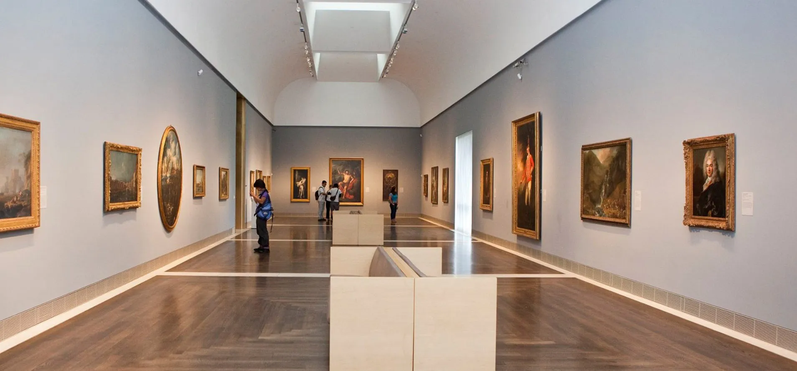
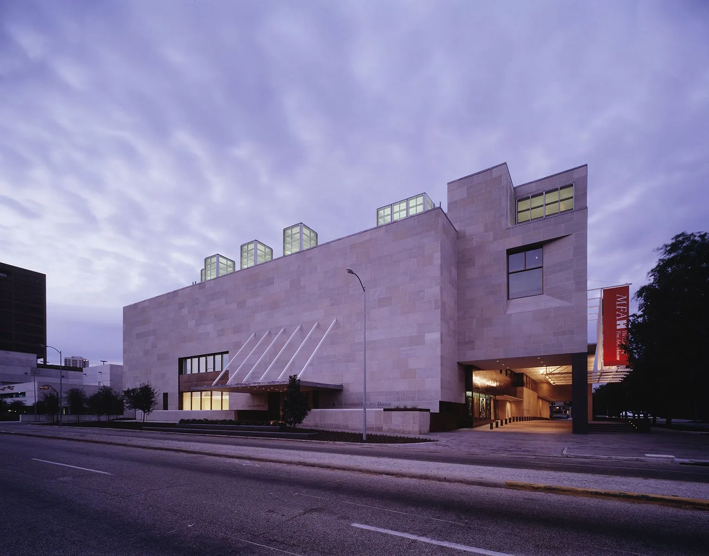

Fusion d'Art et d'Architecture


Alliance Art et Architecture

Le Musée des Beaux-Arts de Houston, conçu par l'éminent architecte Rafael Moneo, est une merveille architecturale et artistique qui enchante par sa grandeur et sa sophistication. Situé au cœur de la vibrante scène culturelle de Houston, cet établissement exceptionnel allie la beauté de l'art à l'élégance de l'architecture contemporaine. Le musée se démarque par son design harmonieux qui intègre des espaces modernes et lumineux, offrant un cadre idéal pour présenter une vaste collection d'œuvres d'art. Moneo a réussi à créer un environnement qui magnifie l'expérience artistique tout en étant fonctionnel pour accueillir les visiteurs et exposer les œuvres de manière captivante.
Culture et Élégance
Le Musée des Beaux-Arts de Houston est bien plus qu'un simple lieu d'exposition. Il joue un rôle central dans la promotion de la culture et de l'éducation artistique, proposant des expositions tournantes, des programmes éducatifs dynamiques et des événements spéciaux. Ces initiatives enrichissantes permettent aux visiteurs de plonger dans l'histoire de l'art et d'apprécier la diversité des expressions artistiques. L'empreinte distinctive de Rafael Moneo se révèle à travers l'élégance intemporelle du bâtiment, sa capacité à allier fonctionnalité et esthétique, offrant ainsi un cadre enchanteur pour la contemplation et l'appréciation des œuvres d'art.
En somme, le Musée des Beaux-Arts de Houston est un joyau culturel où l'architecture remarquable de Moneo se marie parfaitement avec la richesse artistique de ses collections, offrant aux visiteurs une expérience inoubliable dans le monde captivant de l'art.